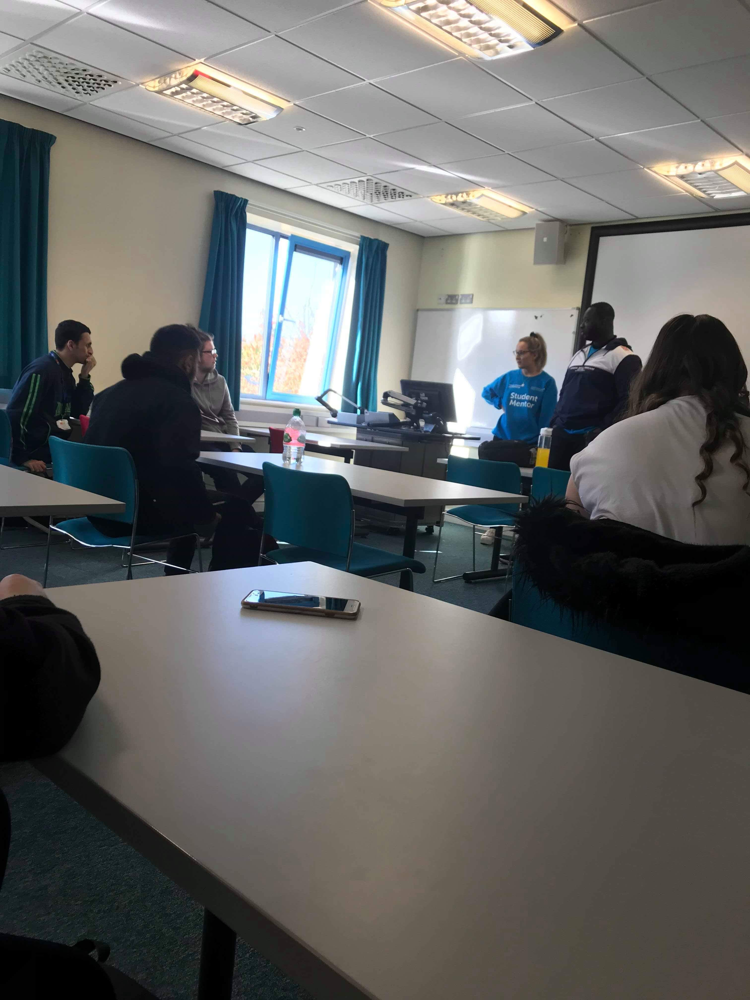

The first ever student mentor session I attended was on 09/10/18, it lasted for 30 minutes. The first student mentor sessions was compulsory for all students to attend. In this session we got introduced to our students mentors who are called Lucy and Josh and are both third year computer science students.
The second mentor session was not compulsory meaning student mentor sessions now counted towards our hours for our continued professional development. The second session was on 19/10/18, this session also lasted 30 minutes. Instead of our mentor session being in pavilion like our first one it was moved to MAE 107. However, room 107 in MAE is very small and there was a lot of us so we moved again to another room. The room we are in now is MAE 111, which is much bigger so we can all fit inside, but it changes every time depending if anyone is in that room. To the right is an image of all of us in our new room during a mentor session. For this session we talked about how we were settling in to university life and if we were enjoying our lectures and seminars.
My third student mentor session was on the 26/10/18. It lasted for 30 minutes, it was in MAE but room 101 because that was the only one free that would fit us all in. For this session we talked a lot about the problems that we had with certain teachers for example a lot of us were not happy with our web lab teacher as we found that she was not very helpful meaning that a lot of us were left confused about what HTML was. Luckily one of our student mentors named Lucy said that she was going to come to out lab session and help support us to make sure we knew what we ere doing. Both of our student mentors made sure that our complaints were heard and passed on to the right people.
My fourth student mentor session was on the 2/11/18. The session was held for 30 minutes in MAE 101 because it was the biggest room available for us to use. In this session we talked about what we were doing on the weekend. We also discussed how we thought our first test went in week 6, most of us were pleased with how the test went.
The fifth student mentor session was on the 9/11/18. This was for 30 minutes and was in the room MAE 107, which is a really small room but this was the only room available for us. Lucy has asked for a different room to be scheduled for us because a lot of us turned up for this weeks student mentor session. This session was about wether or not we were up. To date with our work and if we were finding our html website any easier, which I was finding much easier to do.